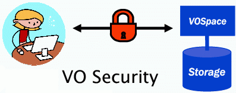

Welcome to the NVO Identity Portal
Enabling secure access to advanced NVO services
|
If you've used the VO, then you know
that much of the VO can be accessed anonymously through public
services and web sites with out any special logins; however, some
services require more security. This portal allows you
to create and manage your own VO
Logon--a single unique identity which you can use to log onto any
VO-compliant portal.
|
 |
Through this portal, you can...
|
Fill out a small registration form and create a username and
password.
|
|
|
Use this portal to manage your identity information (under construction)
|
|
Why Get a VO Logon?
While many VO services are publicly accessible, new services are
emerging that require users to login with a user name and password.
These will include:
- Access to proprietary data: A VO Logon
can allow an observatory to restrict access to data project PIs
and their teams during the data's proprietary period.
- Remote storage: VOSpace
services can provide a place to store your results of VO
data discovery and analysis; a VO Logon can restrict access
to data stored there to you and your collaborators.
- High-performance processing and
services: New computational services will take
advantage of high-end resources that require higher levels of
protection and balancing of usage. A VO Logon can establish
the necessary trust relationship between service providers and
users and help ensure that the services are used for their
intended purpose.
A major aim of VO Logon is to enable single sign-on--that is,
it is not necessary to acquire a username and password for every
separately managed site you visit that provides VO services. More
important than that, single sign-on means that you log on to the VO
through a portal, you have access to VO-compliant data and services
across the VO, regardless of who manages them.
Here are some portals currently supporting VO Logons:
For more information on how VO Logons work, click
here.